Ce texte relate mon parcours pour la participation au championnat régional de Lille de cartes Pokémon en 2025, mon premier tournoi régional.
Ce texte peut être sujet à diverses fautes d’orthographes ou de syntaxes. Veuillez m’en excuser.
Bonne lecture…
Introduction
Depuis tout petit, je me passionne pour les cartes Pokémon. Un univers où des monstres sont représentés sur des cartes, avec des statistiques et des capacités, et avec lesquels on s’affronte pour remporter la victoire, lors de combats contre d’autres joueurs. Pokémon, c’est une licence très large. Elle regroupe des jeux-vidéo, des animés, des livres, des peluches, des jouets, des goodies, ainsi que son JCC (jeu de cartes à collectionner). Pokémon a une telle ampleur qu’il fait de nombreuses collaborations avec d’autres groupes et marques. On peut noter McDonald’s pour le régulier, le musée Van Gogh à Amsterdam, à l’occasion de ses 50 ans, et bientôt la production officielle de LEGO Pokémon, succédant à MEGA Bloks de chez Mattel. Parmi tous les supports pour consommer du Pokémon, celui du jeu de cartes est celui que j’apprécie le plus, représentant également le plus gros de mon budget loisir.
En mars 2025, j’avais participé à la Professor Conference de Bordeaux. Un week-end, le 8 et 9, dédié le premier jour à des ateliers pratiques et des cours sur le rôle des professeurs Pokémon (les juges et organisateurs), notamment sur le JCC, ainsi que sur l’intégration de Pokémon GO dans les ligues. Le deuxième jour, lui, était consacré à une Professors Cup (Coupe des Professeurs), un tournoi destiné aux professeurs Pokémon, avec des règles qui sortent de l’ordinaire. Je suis ressorti de cet évènement avec beaucoup d’informations, et mon envie d’organiser du jeu vidéo et du GO dans la ligue que je gère (actuellement ces activités n’ont pas encore été mises en place). Au-delà des aspects liés à Pokémon, c’est tout mon être qui a grandi, car j’ai fait ce voyage à Bordeaux seul, et qu’il y a encore quelque temps, je ne m’en serais pas cru capable. Mais mon envie de participer à cet évènement était tellement forte que je me suis dépassé. Je ne reviendrai pas sur les détails de l’évènement à Bordeaux, ni sur la distinction entre juges et organisateurs. Tout est récapitulé dans le texte dédié à cette aventure. Non, ce texte est destiné à une autre épopée, celle de mon premier Championnat Régional, à Lille.
La réussite du voyage pour Bordeaux m’a ouvert des portes : celles que voyager en train, se repérer dans une ville inconnue et loger dans un hôtel, sont finalement faisables pour moi. Partant de là, bien des possibilités me sont disponibles. Et comme je l’avais énoncé à la fin du texte pour Bordeaux, j’avais comme but le Championnat Régional de Lille, fin octobre. Mais d’abord, qu’est-ce qu’un Championnat Régional ? Pour vous faire comprendre, il va falloir faire un tour d’horizon sur les différents types de tournoi du circuit compétitif de Pokémon.
Le but des joueurs : récolter des points de championnat (Championship Points, abrégé CP) tout au long de l’année, pour pouvoir se qualifier pour les mondiaux de Pokémon, qui ont lieu une fois par an en août, afin de décrocher le titre de champion du monde, dans la catégorie dans laquelle le joueur joue (jeux-vidéo, JCC ou GO). Pour gagner ces points, différentes manières sont possibles. Déjà, les ligues peuvent organiser 2 types de tournois à points.
Le premier, celui remportant le moins de points de tous les tournois possibles, est le Défi de Ligue (League Challenge). Une ligue peut en organiser une fois par mois max.
Au niveau suivant, il y a la Coupe de ligue (League Cup) qu’une ligue ne peut organiser qu’une fois par trimestre. La Coupe de ligue est le plus gros tournoi qu’une ligue peut organiser. Si une ligue accueille en général une vingtaine/trentaine de personnes à ses tournois, notamment à ses Cup, car rapportant plus de CP, les tournois suivants brassent beaucoup plus de monde.
Quittant la sphère locale, les tournois suivants ne sont plus gérés par les ligues (donc par des personnes comme nous, des organisateurs) mais directement par Pokémon. On passe donc ensuite aux régionaux et spéciaux, des tournois pouvant accueillir plus de 2000 personnes, avec une somme de points évidemment plus conséquente. En plus des points, il y a même de l’argent à gagner. De plus, les champions de chaque régionaux et spéciaux (« les champions », en fonction du domaine dans lequel les gens jouent et de leur catégorie d’âge) reçoivent une invitation pour les Championnats du monde, peu importe s’ils ont assez de points à la fin de la saison ou non. La fréquence de ces tournois est grosso modo d’une fois par mois en Europe.
On passe ensuite au niveau au-dessus, avec les Internationaux. Toujours plus de joueurs, de CP à la clé et de récompenses. Il n’y a que 3 Inter par an. Un en Europe, un en Amérique du Nord et un en Amérique latine.
Enfin, l’évènement ultime est le championnat du monde avec trophées et gain de récompense conséquent à la clé. Seules les personnes ayant atteint assez de points, ceux ayant remporté un Régional ou un International ou ceux étant dans le Top 4 d’un Inter ou du championnat du monde précédent sont qualifiés pour les championnats du monde.
Ça, c’était pour le tour d’horizon sur les différents types de tournois. On peut aussi citer les tournois d’Avant-Première, gérés par les ligues locales. Ces tournois ont pour objectif de promouvoir la sortie d’une nouvelle extension de cartes Pokémon (une nouvelle série) par un petit tournoi convivial sans CP à la clé et sans enjeu compétitif. Maintenant, comment sont classés les joueurs ? En fonction de leur domaine de jeu et de leur tranche d’âge. En-dessous de 6 ans, vous ne pouvez pas participer à un tournoi à points. Pour les autres, les joueurs sont classés en 3 catégories d’âge : junior, senior et master (grosso modo les enfants/ados/adultes). Un junior n’affrontera que des juniors, un senior que des seniors et un master que des masters. Ensuite, vous pouvez participer à des tournois de JCC (Jeu de Cartes à Collectionner), de jeux-vidéo, avec le dernier jeu principal en cours (actuellement Écarlate et Violet) ou de Pokémon GO. Pour les disciplines du JCC et du jeu vidéo, il y a donc 3 classements par tournoi, pour chaque catégorie d’âge (junior du JCC, senior du JCC, master du JCC, …).
Comme pour chaque tournoi, sauf les mondiaux, il faut s’inscrire. Les Défis de Ligue et Coupes de Ligue étant gérés par des ligues, il faut voir les modalités d’inscriptions directement avec les ligues concernées (dans ma ligue, il faut envoyer un mail et le paiement se fait sur place, dans une ligue voisine tout passe par HelloAsso). Pour un tournoi Régional, Spécial ou International, il faut s’inscrire sur RK9, et vous avez le choix entre différents « billets ». Vous participez à ce tournoi en tant que spectateur, ou joueur ? Si joueur, dans quel domaine, et quelle catégorie d’âge ? Évidemment, le prix d’un billet ne sera pas le même en fonction de si vous êtes spectateur ou joueur, ainsi que de votre catégorie d’âge (les master (les adultes) payent plus cher leur billet que les junior et senior (enfant/ados)).
Ces évènements durent un week-end entier, étant donné la masse de monde. Tout le monde s’affronte le premier jour, puis seules les personnes ayant eu les meilleurs scores sont valides pour continuer le deuxième jour. Pour les autres, leur parcours dans le tournoi principal s’arrête là. Mais il n’y a pas rien à faire pour autant le deuxième jour.
Tout au long du week-end, en parallèle du tournoi principal (où il faut un billet de compétiteur pour participer), les gens peuvent prendre part à ce qu’on appelle les Side Events, des petits tournois originaux, peu employés en dehors de ces gros évènements, permettant de gagner des points pour obtenir des récompenses à la fin de l’évènement. Et ça, même les personnes munies d’un pass spectateur peuvent y participer. J’emploie les termes de « pass », « ticket », « billet », mais c’est la même chose.
Ainsi, même si vous vous êtes battus pendant plusieurs heures, mais que vous savez que vous n’atteindrez pas le deuxième jour, vous pouvez vous détendre dans des tournois plus funs, avec moins d’enjeu. D’ailleurs, si dès vos premiers matchs vous enchaînez les défaites et vous savez que ça ne sert à rien de continuer dans le tournoi principal, car vous ne serez pas admis au jour 2 (donc le dimanche), vous pouvez abandonner au plus vite pour rejoindre les Side le plus rapidement possible. Vous pouvez aussi prendre un pass spectateur et ne faire que des Side. Ceci dit, la participation à chaque Side est payante, mais reste peu couteuse. C’est surtout le nombre que vous allez en faire qui va déterminer le prix total.
Préparation
Bon, je veux bien admettre que l’on peut se perdre un peu quand on ne connait pas forcément le sujet. Que l’on soit clair, je ne vise pas les championnats du monde. Mais le déroulement d’un régional en France est le maximum dont notre pays dispose en matière d’évènements. Le régional de Lille est le plus gros rendez-vous de notre nation, ce qui est déjà bien. Peut-être qu’un jour, les championnats du monde auront lieu en France, car ces derniers sont mouvants. Peut-être qu’un jour… Mais en attendant que ce jour arrive, concentrons-nous sur le présent et le futur proche. J’envisage donc ce voyage à Lille. Lille, grande ville, où j’ai vécu pas très loin, de mes 1 an jusqu’à 7 ans. Comment j’envisage ce voyage ? Toujours seul, et de nouveau en train. Ma mère n’était pas rassurée pour mon voyage à Bordeaux. Elle ne l’est toujours pas pour Lille. Mais comme je lui ai dit pour Bordeaux, avec une bonne planification en amont du trajet et une préparation minutieuse, il n’y a pas de raison que ça n’aille pas. Pour Lille, le tournoi a également lieu un week-end, le 25 et 26 octobre au Grand Palais. Je prends une semaine de congé avant et après la semaine de l’évènement, histoire d’avoir le temps de me préparer et de me reposer, sans être pris par le travail. Ce sera d’ailleurs une période de vacances (vacances scolaires d’automne), avec Lille au milieu de cette période. Pour le trajet et le logement, ce sera identique à Bordeaux. Départ vendredi 24 avec le train de ma ville jusqu’à la gare qui me conduira direct vers Lille (Lille Europe en l’occurrence). Logement dans un hôtel Ibis pas loin de la gare de Lille Flandres (pour le retour) et du Grand Palais. Évènement le 25 et 26, puis retour à la maison le lendemain matin. Comme pour Bordeaux, j’ai envie de me prouver que je peux faire ce voyage seul. En prévision de l’évènement, dont les billets ne sont toujours pas disponibles sur RK9, je réserve l’hôtel et le train. Et première déception, je paye plus cher le train et l’hôtel que ce que j’avais payé pour Bordeaux. Le train notamment, car je paye 140 € de plus que pour Bordeaux. La raison, c’est que pour Lille je prendrai un TGV, là où pour Bordeaux c’était un Intercités. L’hôtel augmente un peu, mais pas autant que pour le train. Ce qui m’a le plus surpris concernant l’hôtel, c’est qu’en allant une première fois sur leur site, ce dernier m’indique un prix. Et quand je suis revenu dessus après, son prix avait augmenté… J’ai payé un peu plus cher le train et l’hôtel, dans le cas où je souhaiterais annuler mes réservations, si un empêchement devait avoir lieu.
Mais avec quelle étiquette souhaitais-je participer à Lille ? Je ne cache pas que je n’apprécie pas trop le jeu. Je n’ai jamais été très bon en jeu et finissant déjà dans les derniers lors de tournois avec une vingtaine de personnes, face à 2000 joueurs, je connais d’avance mon classement. M’orientant plus dans le domaine du juge, j’aurais pu postuler en tant que juge pour l’évènement. Mais, étant assez mauvais en anglais, je me voyais mal dans ce rôle. Je pourrais aussi y aller en tant que spectateur. Je ne participerai pas au tournoi principal, mais je pourrai quand même prendre part aux Side Events. Mais j’avais envie de tester le tournoi principal, et de voir jusqu’où je pourrais aller. Imaginez devoir rester concentré durant 8/9 heures d’affilée, à réfléchir en permanence à toutes les combinaisons possibles. Ça doit être bien fatiguant. J’aimerais me rendre compte de l’effet que ça fait de faire le tournoi principal en régio. Même si je sais que je n’irai pas loin. Mais, j’avoue que si le tournoi me claque vraiment, et que je ne suis déjà pas valide pour atteindre le deuxième jour, car trop de défaites, je pourrais quitter le tournoi et tenter de me rattraper sur des Side Events, avec d’autres récompenses à la clé.
Quelques jours plus tard, ce sont les inscriptions pour Lille qui sont annoncées, quasiment la veille pour le lendemain. Problème, je travaille lors de l’ouverture des inscriptions. Et de manière générale, les inscriptions partent très vite. En 5 minutes tout est fini ! Du moins, pour les pass compétiteur. En tant que spectateur, il y a un peu plus de temps. Plus qu’un espoir, que mon frère s’inscrive pour moi. Je prépare donc tout ce qu’il lui faudra pour le moment venu, et lui décris ce qu’il aura à faire. Les inscriptions se font sur le site RK9, et c’est aussi sur ce site qu’il faudra envoyer sa decklist et voir ses pairings lors du tournoi. Mais je reviendrai sur ça plus tard. Tout va donc se jouer sur mon frère. S’il arrive à m’inscrire, j’ai mon ticket pour Lille. Autrement, j’irais probablement en tant que spectateur, abandonnant le tournoi principal. Je suis au travail lors de l’ouverture des inscriptions, le 3 septembre à 19h. J’envoie un rappel à mon frère pour qu’il se prépare. Et je surveille régulièrement mon téléphone, jusqu’à ce que je reçoive un mail peu après disant que j’ai ma place pour Lille ! Mission accomplie. Bien joué ! Une fois la place réservée, plus de stress. La decklist peut être envoyée la veille de l’évènement, j’ai donc tout le temps pour me trouver un deck.
Le deck justement, parlons-en. Quitte à passer plusieurs heures à enchaîner les défaites, j’aimerais jouer un deck qui me plaît, fun à employer. Je pars donc sur mon deck Malvalame, que j’ai depuis quelques temps déjà. Ça, c’est pour le format Standard, le tournoi principal. Car dans le JCC, il existe différents formats, qui ne sont pas soumis aux mêmes règles de création de deck et de légalité des cartes. Les Side Events, ce sont tous des formats spéciaux, où il faut d’autres decks spécifiques. En plus d’avoir un deck Standard, j’ai toujours avec moi un deck pour le format Étendu. J’emporterai donc celui-là aussi. Mais il existe encore un troisième format qui est employé en Side, c’est le « Défi du Champion d’Arène » (ou Gym Leader Challenge, abrégé GLC). Un format qui comprend les cartes de l’Étendu avec une banlist (donc une liste de cartes interdites) qui lui est propre. Pour pouvoir participer au plus de Side possible, je me mets donc à la création d’un deck GLC, tout en revoyant mes decks Standard et Étendu, pour être à jour.
Je peux faire un rapide tour d’horizon sur les formats. Il y en a 3 principaux : le format Standard, le format Étendu et le Gym Leader Challenge.
Pour le premier, c’est le format utilisé dans les compétitions officielles. Tous les tournois rapportant des CP sont en Standard. Les Worlds se font en Standard. La particularité du Standard, c’est que chaque année a lieu une rotation, c’est-à-dire que des cartes sorties dans le passé ne sont plus valides au format, faisant sortir plein de cartes, forçant les joueurs à devoir repenser tous leurs decks, amputés de plusieurs cartes, devenues « périmées », si on veut. Ainsi, les cartes du format Standard sont toutes des cartes plutôt récentes, donc facilement trouvables pour quelqu’un qui souhaiterait commencer le jeu.
À l’inverse, le format Étendu regroupe toutes les cartes sorties depuis le bloc Noir et Blanc (donc 2011) jusqu’à aujourd’hui. Il n’y a pas de rotation, seulement quelques cartes qui ne sont pas autorisées, car créeraient des combos trop forts. De ce fait, la masse de cartes possibles dans ce format est beaucoup plus importante que dans le format Standard, régulant chaque année les cartes valides. L’inconvénient du format Étendu, et probablement aussi pourquoi il n’est pas joué, c’est que beaucoup de cartes très utilisées dans ce format sont assez vieilles, les rendant difficiles à avoir pour tous, ou devant payer plus cher, car plus rares. Là où, au format Standard, les cartes étant récentes et réimprimées en masse, elles sont accessibles financièrement. Personnellement, j’ai commencé les cartes Pokémon justement vers 2013/2014, donc je dispose quand même de plusieurs cartes de ce format. Mais j’avoue que pour une personne qui a démarré en 2023, le format Étendu n’est pas le format le plus économique. De plus, le fait qu’il y ait une rotation chaque année au format Standard évite de se retrouver dans la situation actuelle du format Étendu, qui est que la plupart des decks sont toujours les mêmes.
Dans le JCC en général, les decks sont classés en « archétype ». Les archétypes représentent les cartes cœur d’un deck, autour duquel va tourner votre deck. Mon deck Standard est un archétype Malvalame ex (Ceruledge ex en anglais), parce que mon deck tourne autour de cette carte (c’est mon attaquant, et sans cette carte et sa stratégie qui va avec, mon deck ne fonctionnerait pas). En Standard, même si l’on retrouve souvent les mêmes archétypes, ils sont plutôt diversifiés. À la différence de l’Étendu, où l’on retrouve très souvent le même archétype (Regidrago Box), car il a accumulé 14 ans de cartes, lui donnant beaucoup de possibilités dans ses actions, de mise en place et d’efficacité. C’est pour éviter de se retrouver avec toujours le même deck que la rotation existe, ainsi que pour que les cartes jouées au format officiel soient accessibles à tous et toutes.
Enfin, le format du Défi du Champion d’Arène reprend les bases de l’Étendu, avec une banlist différente de l’Étendu, le deck que vous jouez devant être monotype (un seul type dans le deck), avec 1 exemplaire par carte (là où la limite est de 4 pour le Standard et l’Étendu, sauf cartes spécifiques). Et des formats, il en existe encore d’autres, mais ils ne sont quasiment pas employés en temps normal, seulement dans les Side Events.
Bon, je peux comprendre que l’on soit un peu perdu quand on ne s’y connait pas trop. Mais c’est important de présenter un peu ce dont on parle, tout en essayant de ne pas trop rentrer dans des détails techniques. Quoi qu’il en soit, une fois avec mes 3 decks, il faut que je m’entraîne. Et là, c’est compliqué. Je n’ai pas grand monde avec qui faire quelques parties. Pour mon deck Standard, pas de problème, je peux m’entraîner sur l’appli Pokémon Live, l’application officielle du jeu de cartes. Par contre, pour mes decks Étendu et GLC, c’est plus difficile. Ces 2 formats ne sont pas disponibles sur Live, je ne peux donc m’entraîner que dans la vraie vie. Il y a bien mon frère avec qui je m’entraîne, mais une fois fait le tour de ses decks, j’aimerais bien en voir d’autres. D’autant plus qu’ayant arrêté le jeu, ses decks sont à la ramasse. Ce n’est pas un vrai challenge. Mais heureusement pour moi, c’est la reprise de la ligue dans laquelle j’exerce, regroupant également d’autres joueurs. Ceci dit, j’avoue que la situation de notre ligue n’est pas à son avantage. La salle dont nous disposons est petite, nous empêchant de pouvoir faire bourse d’échange et jeu à côté, comme nous le faisions avant, et l’entrée dans l’association d’autres JCC va faire sauter des créneaux où les séances de cartes Pokémon aurait pu s’installer. De plus, de mon côté, le début du théâtre me fait louper les séances de jeu du 3ème vendredi de chaque mois. Toutefois, lors d’une journée consacrée à l’assemblée générale de l’association, j’ai pu pratiquer un peu, mais pas autant que j’aurais pu l’espérer. Pour le deck Standard, comme je le disais, ce n’est pas un problème, car je peux utiliser Live quand j’en ai envie. Mais m’entraîner à l’Étendu et au GLC est plus compliqué. Ainsi, c’est surtout avec mon frère que j’aurais pratiqué sur ces 2 formats, et parfois moi contre moi-même (à défaut, il faut bien improviser quand on n’a personne).
Me voici donc avec mes 3 decks bien mis à jour. Bien mis à jour, pas vraiment, car quelque temps après sort la nouvelle extension de cartes Pokémon, « Méga-Évolution », qui apporte son lot de nouvelles cartes et qui entraîne une modification plus ou moins importante de l’archétype Malvalame ex (le deck que je joue). Le deck entier n’est pas à revoir, mais de manière générale, il est à retravailler, pour y inclure de nouvelles cartes le rendant plus fort. Certaines cartes disparaissent donc, d’autres apparaissent, et c’est une nouvelle prise en main qu’il faut revoir. Heureusement, j’ai pu récupérer une partie des cartes directement dans ma ligue pour limiter les achats (lors de l’Avant-Première). Chaque euro économisé pourra être utilisé lors des Side, comme ça. Quand on joue un deck, notamment un archétype compétitif, il y a bien sûr des cartes cœurs dans ce deck. Des cartes que l’on retrouve à chaque fois dans les decks des personnes jouant le même archétype. Prenez l’archétype Malvalame ex que je joue. Une carte cœur serait la carte emblématique du deck elle-même, Malvalame ex. Le deck tourne autour de cette carte, c’est l’attaquant principal. Mais Malvalame ex évolue d’un Pokémon. Une autre carte cœur sera donc sa pré-évolution, Charbambin, auquel cas on ne pourrait pas jouer Malvalame. Malvalame attaque à minima avec une Énergie Feu. Les Énergies Feu rentrent donc dans les cartes clés du deck. Et c’est comme ça pour plusieurs cartes, que l’on retrouve dans tous les decks jouant cet archétype, allant de Pokémon de soutien à des cartes servant à nous alimenter ou à mettre en place notre jeu. Ce qui fait que plus vous connaissez la variété des archétypes employés, et plus vous savez quel sera le plan de jeu de l’adversaire, ainsi qu’une bonne partie des cartes qu’il jouera. Toutefois, je trouve qu’il est sympa de créer un deck de manière à ce qu’il nous plaise, quitte à le modifier un peu pour le rendre plus personnel. Moi par exemple, je me suis bien sûr inspiré de listes employées par les joueurs ayant le plus performé avec ce deck, et à force de pratique sur Live je l’ai aussi un peu modifié à ma sauce, pour le différencier un peu des listes classiques (il s’agit de changements mineurs, mais disons que j’y ai mis une touche personnelle, avec ma manière de jouer, permettant de me démarquer d’un plagiat total d’une liste trouvée sur Internet).
Une fois mes decks considérés comme terminés, c’est-à-dire que je ne les modifierai plus, je me mets à rédiger leurs decklists que j’envoie à impression à ma mère. Pour le tournoi principal, la decklist de votre deck Standard s’envoie sur RK9, mais pour les Side, étant donné qu’ils sont plus aléatoires et à la demande, il faut une version papier pour chaque deck que vous jouerez. Une decklist, c’est un document référant toutes les cartes de votre deck. C’est un document sérieux et obligatoire. La moindre erreur de numérotation des cartes peut vous coûter une partie. Ce serait bête d’avoir une partie perdue juste parce qu’on ne prend pas le temps de faire correctement sa decklist, surtout qu’elle se fait chez soi au calme. Pour ces dernières, j’ai utilisé le site de « Limitlesstcg.com » pour les créer. Limitless est un site qui recense les decks Standard ainsi que leur classement dans de gros tournois. Les archétypes joués, mais aussi les joueurs en question et leur palmarès. Le site propose d’autres outils, comme des recherches de cartes parmi des filtres, et d’autres fonctionnalités que je ne connais pas assez, en toute franchise.
Quand on fait sa decklist, une question ressort souvent : dans quelle langue faut-il la faire ? Eh oui, car quand vous allez jouer dans votre ligue locale, vous le faites dans la langue que tout le monde parle. Mais quand vous venez de l’étranger, ou tout simplement quand le tournoi a une portée plus mondiale (comme un régional), quelle langue utiliser pour l’écrit de sa decklist ? Eh bien, ce n’est pas toujours clair. Disons que j’aurais pu la faire en français, puisque mes cartes sont en français, ça n’aurait pas posé de problème. Mais j’ai préféré la faire en anglais, vu que c’est une langue plus universelle. De toute manière c’est le site qui a quasiment tout fait.
Je me suis donc entraîné pour le tournoi principal (en Standard), ainsi que pour l’Étendu et le GLC pour les Side. Mais en Side justement, il existe encore d’autres tournois, mais beaucoup plus différents. Parmi eux, l’on retrouve « Premiers Boosters » (Pick-a-Pack en anglais), « Combat Boosters » (Booster Battle en anglais) et « Format de Raid » (Raid format). Pour les 2 premiers, pas besoin de decks, tout se joue avec des boosters que l’on vous offrira sur place et des cartes Énergie, et à vous des petites parties rigolotes. Pour le dernier, il vous faudra cette fois un deck, mais celui que vous voulez (qu’il soit de format Standard, Étendu ou GLC, ça passe). Dans ce format, vous devez collaborer avec vos alliés pour lutter contre un Pokémon de Raid qui vous infligera de nombreuses cartes Dresseur pour vous ralentir, et vous assénera de grosses attaques pour essayer de vous faire sortir du jeu. La communication avec vos alliés sera donc la clé du succès, étant donné que vous pouvez jouer des cartes pour vos alliés. Tous ces formats, et il en existe encore d’autres, sont référencés dans le guide de jeu alternatif du JCC Pokémon, livret que j’ai justement récupéré dans ma ligue pour m’entraîner avec mon frère sur ces 3 formats employés aux régios. Le format de Raid était intéressant. J’avais conçu un deck de Raid pour l’occasion, avec des cartes que j’avais en ma possession, mais mon deck de Raid, après que j’ai fait quelques parties avec mon frère, est bien trop facile. Pris dedans, j’ai listé des cartes qu’il faudra que je récupère, afin que je le modifie pour le rendre plus difficile. Mais c’est un petit challenge sympa. J’essaierai peut-être d’en faire de l’initiation dans ma ligue, si ça intéresse les gens et si ça marche, au moins pour qu’ils découvrent.
Nous sommes à quelques jours du voyage. Je reste bien à l’affut des messages qui sont envoyés sur Discord concernant le régional. C’est intéressant, on y apprend des choses, et on répond également à mes interrogations. Si, pour Bordeaux, j’avais juste pris un gros sac à dos avec moi, renfermant un plus petit pour les évènements sur place de Bordeaux, là, je vais y aller avec un sac à dos de taille moyenne (moins grand que le premier) et avec une valise. En fait, je repartirai forcément avec quelque chose de plus conséquent qu’à Bordeaux. Il faut donc que je puisse le ramener. À certains Régios, un sac à dos était offert. Je ne connais pas les cadeaux qui seront offerts aux joueurs, mais si on me donne un sac à dos, il faut bien que je puisse le stocker quelque part. Donc je préfère prendre plutôt large que pas assez. La veille du départ, je liste toutes les affaires dont j’aurai besoin, prépare mes effets personnels ou les rassemble dans un coin pour le jour J. Également, je m’entraîne un peu à l’oral avec des mots et des phrases d’anglais simples, car je sais que je n’affronterai pas que des Français. J’enregistre aussi les pages Internet sur mon téléphone que j’aurai besoin de consulter sur place. Entre RK9 pour les pairings et Fanfinity pour le planning des Side Events, mieux vaut préparer ces pages sur son téléphone pour être déjà prêt le jour J.
Trajet aller
Le jour du départ, vendredi 24, je m’en vais vers 14h, direction la gare de ma ville, pour aller à celle d’une ville voisine, là où je prendrai ensuite un direct vers Lille Europe. Vendredi justement, c’est le jour du marché dans ma ville, le matin. Et mon grand-père en a profité pour se rendre à la camionnette de la SNCF, présente sur la place du marché le vendredi, pour récupérer 1 étiquette à bagage, à mettre sur ma valise, avec dessus mes coordonnées, au cas où. D’ailleurs, quelles seront les conditions météo à Lille ? Dernièrement, l’actualité météorologique faisait état de la tempête Benjamin, qui monte dans le Nord. De la pluie est donc prévue, mais on peut espérer que je passerai entre. Je prends donc le train pour la ville voisine. Cela faisait longtemps que je ne l’avais pas pris, mais ce n’était pas une expérience nouvelle, étant donné le nombre de fois que je l’avais pris lorsque j’étudiais dans une ville à côté. Une fois dans le train, je me rends compte que j’ai oublié ma nourriture, laissée chez mes grands-parents. Tant pis, j’achèterai directement une fois arrivé à Lille.
Je débarque donc ensuite à la gare de ladite ville voisine, là où j’apprends que mon train va avoir 30 minutes de retard. J’en profite donc pour acheter ma nourriture directement dans cette gare, autant s’occuper durant les 30 minutes. Une fois le train arrivé, c’est le grand départ. Équipé de mon sac à dos et de ma valise, je n’ai pas de difficulté à trouver le train correspondant et à m’installer. D’ailleurs, qu’est-ce qu’il est grand, disposant même d’un étage supérieur. Par contre, loger la valise au-dessus de ma place était impossible, l’espace étant trop petit. Il faut donc que je la dépose dans le wagon où je suis installé, tout en gardant un œil dessus, notamment lorsqu’il y a du passage. Comme pour le trajet dans le train pour Bordeaux, je m’occupe principalement avec ma Switch, disposant d’une prise électrique pour recharger ma console et mon téléphone. 4 heures passent dans le train, le jour disparaissant petit à petit au fur et à mesure.
Et arrivée à destination, c’est la pluie dehors. Et la bonne pluie. Évidemment, arrivée vers 19h45 (15 minutes de retard au final, ça va), il n’y avait plus aucune lueur du jour, et étonnamment, Lille n’est pas très bien éclairée, du moins pas partout. Les zones dans lesquelles j’étais n’avaient quasiment pas d’éclairages, les seules lumières étant celles des phares des voitures, des feux tricolores et des publicités des enseignes. Et quelle circulation. Il y a intérêt à bien suivre les indications des feux tricolores concernant les piétons, car ça roulait pas mal. J’arrive ensuite à l’Hôtel Ibis Lille Centre Grand Palais, trempé, mais content d’être enfin au sec et de pouvoir me poser. L’hôtel est noté 3 étoiles, comme pour Bordeaux. Initialement je n’avais pas pris le petit-déjeuner inclus dans l’offre de mon séjour. Mais avec 320 € pour les 3 nuits, je me suis dit que je n’étais plus à 20 € près pour l’option petit-déjeuner. Et je n’avais pas envie de devoir retourner dehors tôt demain matin pour m’acheter à manger. Je me couche donc, assez fatigué, sachant que demain, j’ai une grosse journée qui m’attend.
Jour 1
Lever plus ou moins tôt le samedi de l’évènement. J’en profite pour bien manger au petit-déjeuner de l’hôtel, histoire d’avoir l’estomac bien rempli pour bien tenir dans la journée. Je quitte l’hôtel direction le Grand Palais juste à côté, avec environ 30 minutes d’avance sur l’heure d’ouverture. Mais quand j’ai vu la queue, j’ai compris que 30 minutes n’étaient pas assez. Un monde fou, les gens étant arrivés très tôt pour l’évènement. Et la queue continuait de s’agrandir derrière moi. Évidemment il faisait encore noir, et un peu frais, mais j’avais un bon manteau avec moi. J’avais pris mon sac à dos, avec dedans mes 3 decks, mes affaires de jeu, une batterie externe et du Doliprane au cas où, ainsi que des sleeves (protège-cartes) de rechange pour mes decks, dans le cas où j’ai besoin d’en changer quelques-unes en urgence. Niveau nourriture, je sais d’avance que ça pouvait être chaud de manger un déjeuner au moment de l’évènement, car je n’aurais pas forcément le temps. Tout dépendra de la vitesse à laquelle se terminera ma ronde. Dans la catégorie Master, il n’y a pas de pause déjeuner de prévue. Donc si votre match se termine vite, tant mieux pour vous, vous avez le temps de manger. Mais si ça traîne et qu’une fois qu’il est fini le prochain match va commencer, alors ça semble compliqué pour se nourrir. C’est pourquoi, il est conseillé d’emporter avec soi des barres de céréales ou ce genre de chose, à manger rapidement et fournissant de l’énergie. Et c’est ce que j’ai fait, en prenant avec moi des Kinder Bueno. Ce n’est peut-être pas tout à fait l’aliment idéal, mais je ne voulais pas d’une barre aux céréales qui colle aux dents.
Une fois l’ouverture du Grand Palais débutée, la sécurité fait une très brève fouille des sacs (mais ils n’ouvrent pas toutes les fermetures, et si vous recouvrez une arme par d’autres affaires dessus, ils ne fouillent pas en profondeur). Ensuite, les personnes ayant déjà leur bracelet accèdent à la salle de l’évènement, tandis que les autres (comme moi) vont se procurer un bracelet. Le bracelet est obligatoire pour pouvoir rentrer. Que vous soyez spectateur ou joueur, il vous faut un bracelet. Vendredi soir, les personnes déjà présentes à Lille pouvaient d’avance obtenir leur bracelet. Pour les gens comme moi qui sont arrivés à Lille trop tard, il faut donc récupérer le bracelet le samedi matin, avant le début du tournoi. C’est assez rapide, ils vérifient votre CNI et que vous vous êtes bien inscrit, en tant que joueur ou spectateur.
J’arrive ensuite dans la salle, et c’est grand, très grand, et peuplé de monde. Environ 3500 personnes sont attendues. Je ne vais pas faire un descriptif complet de la salle, et tous les services seront détaillés au fur et à mesure de l’écrit. Seulement quelques points à noter.
Quand on arrive, une des premières choses que l’on voit sont des stands. Des boutiques, vendant des produits Pokémon, payent leur emplacement lors de l’évènement, et en contrepartie, ont le droit de vendre leurs produits (toujours liés à Pokémon) lors du week-end. Les produits vendus étaient variés, allant des cartes à l’unité à des cartes gradées, des produits de cartes Pokémon (coffrets, booster à l’unité), des peluches, des accessoires, des boitiers et sleeves pour deck et des classeurs de rangement de cartes. Certains stands proposaient de racheter vos cartes, si vous voulez faire un peu de tri et si ça les intéresse.
Diverses activités étaient proposées pour ceux qui voulaient s’occuper de manière plus originale qu’avec les cartes Pokémon ou le jeu vidéo. Parmi elles, on retrouve des jeux de société (Labyrinth et Scrabble, version Pokémon), un coin avec des fauteuils pour s’amuser entre vous, avec télé à disposition si vous voulez jouer sur Switch, photomaton, plans d’origamis en forme de tête de Pokémon. Des épreuves étaient également à disposition, nous permettant de gagner des stickers si l’on remportait les défis. Parmi eux, l’on retrouve la participation à un cours de yoga (si si, un petit cours était organisé), remporter le concours de coloriage ou le concours de dessin, reconnaître un Pokémon juste par son ombre, participer à des Side Events, dépenser 1000 points au Prize Wall (ça j’y reviendrai dessus plus tard), finir dans le Top 8 d’un tournoi, et d’autres encore… Ces activités sont surtout destinées à ceux qui ne participent pas au tournoi principal, voire à ceux qui ne sont pas éligibles pour le jour 2. Mais cela permet de s’occuper de manière originale, tout en se mettant à l’épreuve.
Dans un coin de la salle se tenaient des stands de nourriture, si vous souhaitez vous ressourcer sans avoir à sortir de la salle, avec la météo capricieuse. Dans la masse de monde, j’aperçois tout de même un journaliste de RTL, interviewant une des personnes présentes à l’évènement.
La majorité de la salle était prise par des tables, avec un code couleur lié à chaque discipline. Le bleu représentait le JCC, le rouge le JV, et le vert pour GO. Il y avait beaucoup moins de tables vertes que de tables bleues, ces dernières allant jusqu’à 1200 places. Si je suis le seul de ma ligue à m’être rendu à ce Régional, il y a tout de même plusieurs personnes d’une ligue voisine qui sont présentes. Et c’est toujours sympa de voir du monde que l’on connait. Pour la catégorie Master en JCC, ce sont 2028 joueurs qui sont attendus, regroupant 49 nationalités différentes.
Le début du tournoi principal pour les masters TCG débutait à 8h30. Pour connaître sa table et l’adversaire que l’on affronte, il faut se rendre sur le site de RK9. C’est pourquoi j’avais déjà enregistré la page sur mon téléphone, pour gagner du temps. Je démarre donc à la table 836 contre un joueur appartenant à la ligue voisine dans laquelle j’exerce. Il était peu probable que je tombe sur une personne que je connais déjà, sur 2028 joueurs. Le match démarre donc, et je remporte la première ronde. Bon, j’ai eu de la chance, mon adversaire n’a pas réussi à se mettre en place, ce qui m’a permis d’avoir une trop grosse avance. Son deck, un archétype Lanssorien ex / Noctunoir (Dragapult / Dusknoir, aussi abrégé Draganoir). Cela me fait donc 3 points.
Ah, oui, il semble que j’aille un peu vite sur mes scores. Pour mieux comprendre le système de points, et le nombre requis, je vais faire une petite explication. Dans le JCC, une ronde (round) se joue en 2 manches gagnantes, sur 3 maximums (c’est ce qu’on appelle Best Of 3, ou BO3). 50 minutes par ronde, avec une prolongation à la fin du temps réglementaire. 8 rondes étaient jouées pour tout le monde, ce samedi. Pour se qualifier pour le deuxième jour, il faut obtenir au minimum 16 points avant la fin de la huitième ronde. Si vous avez vos 16 points minimums, vous jouez une neuvième ronde samedi, et si vous l’emportez, vous êtes qualifiés pour le Day 2. Concernant les points, une victoire rapporte 3 points. Une égalité : 1 point. Et une défaite : 0. « Victoire-Défaite-Égalité » sont représentés comme ci : X-X-X. Ainsi, mettons qu’au bout de la cinquième ronde vous avez eu 2 victoires, 1 défaite et 2 égalités, cela vous rapporte donc 8 points sur les 16, avec un schéma comme ci : 2-1-2. Pour atteindre les 16 points, il faut donc avoir au minimum 4-0-4 ou 5-2-1. Mon score à l’issue de ce premier match est donc de 1-0-0 pour la première ronde.
Mon match ayant terminé pas trop tard, j’en profite pour un passage aux toilettes, car je ne sais pas le temps que j’aurai après pour y aller. Ce serait dommage de devoir déclarer forfait juste parce que je ne peux plus me retenir.
Lors du deuxième combat, je me retrouve à la table 400, contre un Italien. Cette fois, c’est une défaite, son deck Gardevoir ayant eu raison de moi, une de ses stratégies ayant consisté à m’empêcher de jouer plusieurs cartes (des cartes Objet en l’occurrence, stratégie « Item Lock »), m’empêchant de pouvoir me mettre en place, lui prenant de l’avance. Mon score est donc de 1-1-0.
Mon troisième match a lieu contre un Belge, au numéro 910. De nouveau une défaite, contre son deck Pondralugon ex (Archaludon ex en anglais). De toute manière, je sais que je n’irai pas loin. Je suis donc envoyé à la table 983. De manière générale, plus votre numéro de table est élevé, et plus votre rang est mauvais. Mon nouvel adversaire est un Anglais, jouant le même deck que moi. On appelle ça un match miroir, le fait d’affronter un joueur qui joue le même archétype que vous. Nos plans de jeu seront donc très similaires. Mais je remporte la partie, pile au début des prolongations. J’ai de nouveau envie d’aller aux toilettes, mais en fonction du monde qu’il y aura, ça risque d’être trop juste. Mon score passe donc à 2-2-0.
Lors du cinquième combat, à la table 734, j’affronte un Français (la communication sera donc plus facile), jouant un deck Gardevoir ex, comme le deuxième joueur que j’avais affronté. Cette fois, ce n’est ni une défaite ni une victoire, mais une égalité. Cela me fait donc 2-2-1. Je suis donc à 9 points de participer à la neuvième ronde du samedi. Mais dans ce cas, il faut que mes 3 derniers matchs soient toutes des victoires.
Mon sixième combat est également une victoire, contre un Allemand, jouant un deck Dracaufeu ex / Roucarnage ex / Noctunoir (Charizard ex / Pidgeot ex / Dusknoir en anglais) à la table 822. Je suis donc à 3-2-1. À ce moment-là nous sommes déjà l’après-midi, je n’ai toujours rien mangé et j’ai toujours envie d’aller aux toilettes.
L’avant-dernier match a lieu à la table 653, contre un Belge. De nouveau une victoire, contre son deck Rugit-Lune ex (Roaring Moon ex anglais). Mon match ayant vite fini, à 17h40, j’en profite pour enfin passer aux toilettes, et manger mes Kinder Bueno. Pour d’autres joueurs, ils savent déjà qu’ils ne passeront pas pour la neuvième ronde. Une question se pose alors : faut-il continuer jusqu’au bout ou ne vaudrait-il mieux pas abandonner le circuit principal, pour aller faire des Side Events et commencer à grapiller des points ? Moi de mon côté, tout est encore possible. Si je gagne le prochain match, je suis éligible pour la neuvième ronde. Je n’ai donc pas trop le choix que de continuer.
Le huitième match, justement, a lieu contre un Italien à la table 511 (c’est bien, je remonte), jouant le même archétype que moi (de nouveau un match miroir). Il remporte la première manche, je progresse bien dans la seconde, mais hélas je fais une erreur de jeu (pioché une carte en trop), ce qui fait qu’un juge intervient, et comme il se doit de le faire, il applique une sanction de DPL (Double Prize Loss), ce qui signifie que mon adversaire aura moins de cartes à récupérer pour remporter la manche. Sans surprise, du coup, il la remporte, remportant les 2 manches nécessaires pour être qualifié pour la neuvième ronde. Moi, de mon côté, j’ai été déçu. Ce n’est pas tant d’avoir perdu le match qui m’embête, mais de ne pas avoir remarqué que j’avais pioché une carte en trop, alors que je fais du juge régulièrement dans 2 ligues différentes. Si je n’avais pas fait cette erreur, j’aurais peut-être remporté la manche en cours, mais après il aurait fallu faire une troisième partie pour se départager. C’est donc un peu dégoûté que se clôture le tournoi principal pour moi, finissant 678ème sur 2028, le tout à 19h (et ça avait commencé à 8h30).
Bon, normalement, ma sanction devrait m’apprendre à ne plus reproduire l’erreur et à être plus vigilant la prochaine fois. En tout cas, à une victoire près, pour un premier Régio, je trouve que c’est pas mal. Après j’ai eu beaucoup de chance aussi, plusieurs adversaires n’ayant pas eu les cartes qu’il leur fallait pour se débloquer.
J’aimerais faire un aparté concernant 2 pratiques qui se font en tournoi compétitif. Lorsque mon dernier match allait commencer, contre l’Italien, ce dernier m’a proposé que l’on fasse un gentlemen’s agreement. Alors, qu’est-ce que c’est ? C’est un procédé par lequel, au lieu que 2 joueurs finissent en égalité, l’un est déclaré vainqueur et l’autre perdant, selon un mode de sélection décidé par les 2 partis. Concrètement, moi et mon adversaire étions à 3 points de passer à la neuvième ronde. Dans l’optique où nous ferions égalité à la fin du time, au lieu de nous retrouver tous les 2 à 14 points sur 16, sans qu’aucun de nous ne puisse passer à la ronde suivante, il proposait que nous fassions un lancer de dé, qui décidera qui sera déclaré vainqueur et l’autre perdant. Je précise que c’est si on finit en égalité à la fin du time. Pour éviter que nous « perdions » tous les 2, le hasard permettrait à l’un de nous de passer à la ronde suivante. Bon, au final, nous n’en avons pas eu besoin, mon adversaire ayant remporté les 2 manches. Certains remplacent le lancer de dé par celui qui s’est le mieux mis en place lors du match auquel le temps réglementaire s’est écoulé.
Autre pratique, celle de l’Intentional Draw (ID). Elle consiste en ce que les joueurs déclarent une égalité. Admettons que moi et mon adversaire ayons 15 points, et que c’est la dernière ronde. Les 2 joueurs peuvent acter ensemble de déclarer le match comme étant une égalité, sans même l’avoir joué, pour que les 2 joueurs passent à la neuvième ronde (16 points sur 16).
Au cours de la journée, j’ai également récupéré mes cadeaux en tant que compétiteur. L’avantage d’acheter un pass compétiteur, c’est que vous pouvez participer au tournoi principal, mais également que vous avez le droit à quelques cadeaux. Et cette année, pour le Régio de Lille, ça a été une carte estampillée du logo des Regional Championships, ainsi qu’un tapis de jeu (Playmat). C’est mon tout premier tapis de jeu, il est officiel, c’est toujours sympa (même si j’avoue que l’artwork de Méga-Lucario n’est pas celui que je préfère). Alors, il faut savoir que là, le ticket compétiteur coûtait 70 € (pour le JCC en master). L’année dernière, ce même ticket coûtait 60 €, avec en plus un sac à dos offert ainsi qu’une gourde et un ticket pour participer à un Side Event gratuitement. Alors, pourquoi cette année Pokémon a été aussi radin, alors que le prix du ticket a augmenté, ça je ne sais pas. Cette année, si vous vouliez le sac à dos et la gourde en plus, il fallait payer davantage.
Je rentre donc le soir, 19h passées, toujours à circuler dans des rues qui manquent d’éclairage, étonnant quand j’ai ensuite appris que Lille figurait parmi les villes ayant le plus d’insécurité en France. Le lendemain sera plus cool, étant donné que je participerai à des petits tournois alternatifs sans trop d’enjeu, et qu’en plus, nous reculons d’une heure la nuit du samedi à dimanche, me permettant de dormir plus longtemps.
Jour 2
Le lendemain, je suis prêt pour le deuxième jour. Comme pour le jour précédent, je me suis pris des Kinder en guise de déjeuner, et ai bien mangé au petit-déjeuner. À l’ordre du jour, ma participation à un tournoi en format Étendu. Puis, une fois ce dernier fini, je me rabattrai sur les Side pour accumuler des points que je pourrai ensuite dépenser au Prize Wall. La participation au tournoi du format Étendu était gratuite, parce que c’était un tournoi officieux. Il ne faisait pas partie des tournois gérés par Pokémon. Il a vu le jour sous l’envie d’autres personnes d’organiser ce petit tournoi dans ce format si peu employé par Pokémon. Le tournoi débute vers 10h, et va se dérouler en BO1 (Best One 1, une manche gagnante) en 30 minutes. Si mon deck Malvalame avait bien été utilisé hier, c’était maintenant au tour de mon deck Regidrago Box, pour l’Étendu, de faire ses preuves.
Pour mon premier combat, contre un Anglais, je perds, contre son deck Lugia V-Star. Je remporte cependant le deuxième match, contre un Français avec un deck basé sur des Pokémon de type feu (mais pas un archétype reconnu compétitivement). Victoire pour le troisième match aussi, contre un Français, en match miroir. Pour le quatrième match, c’est pareil, victoire contre un Français, qui jouait lui aussi un archétype Regidrago Box. Malheureusement pour lui, il n’a pas pu se mettre en place, ce qui fait que je l’ai éliminé dès le deuxième tour, n’ayant aucun Pokémon en soutien.
C’est le problème du BO1 (1 manche gagnante). Si vous n’avez juste pas de chance, c’est la défaite pour toute la ronde. Après ce match express, j’en profite pour passer aux toilettes, ayant le temps. À ce niveau-là, si je remporte le match suivant, je suis qualifié pour le Top 8. Tout va donc se jouer là. Mais hélas, je perds contre un Anglais jouant un deck Rugit-Lune ex et bloquant beaucoup de mes actions (Miasmatoxine, Temple de Sinnoh). N’étant pas qualifié pour le Top 8, mon parcours s’arrête là, mais je repars tout de même avec un booster PPS4.
Nous sommes déjà dans l’après-midi. Il me reste maintenant que les Side Events, auxquels je me suis entraîné avec mon frère. Cependant, à ce niveau-là de la journée, il ne reste plus beaucoup de Side disponibles. Alors, ce n’est pas tout à fait vrai. Vous avez 2 types de Side. Ceux programmés, qui sont des tournois et qui coûtent 15 €, et ceux à la demande, que l’on peut réclamer quand on est 4 joueurs et qui coûtent 10 €. Tous les Side que vous faites ont juste pour fonction de vous rapporter des points via des tickets, points que l’on dépense ensuite au Prize Wall, proposant différents lots en fonction des points dont vous disposez. Le tournoi principal, celui qui a débuté samedi et qui continue ce dimanche pour les personnes qualifiées, vous rapporte des points pour les qualifications aux championnats du monde (les CP). Ceux des Side sont destinés au Prize Wall, mais ce ne sont pas les mêmes points que les CP. Pour participer à un Side programmé, il faut s’inscrire et payer sur le site de Fanfinity. Il était un peu moins de 14h, et 2 tournois m’intéressaient. Mais je ne pourrai en faire qu’un seul. Le premier était le GLC, auquel je m’étais justement fait un deck dessus, et le Paradox Zone, un format que je ne connais pas et qui n’est pas référencé dans le livret des tournois alternatifs. Bon, les deux m’intéressaient, mais quitte à avoir mis de l’argent pour me faire un deck GLC, j’aimerais bien partir sur ça, histoire de rentabiliser un peu mon deck. Concernant le Paradox Zone, je prends une photo des règles, que j’imprimerai plus tard pour la mettre avec le livret des tournois alternatifs. Il n’y aura plus qu’à le tester à la maison après.
Il restait encore un peu de temps avant que ne débute le tournoi GLC. Et dernièrement, je m’étais mis à la conception d’un deck de Raid, comme j’en avais parlé plus haut. Il y avait donc quelques cartes que je recherchais. J’en ai donc profité pour faire un tour au niveau des stands des boutiques, et on peut dire que certains ne lésinent pas sur les prix. Pour une carte qui cote 10 centimes sur Cardmarket, je la retrouvais à 10 € dans leurs classeurs ! Mais bon, j’imagine que s’ils mettent de tels prix, c’est bien que certains doivent leur en acheter. Finalement, j’achète 3 cartes à 1 € l’unité (sur un autre stand). Encore une fois, chaque carte à l’unité m’aurait couté moins de 1 € sur Internet, mais j’aurais également eu des frais de port et un suivi, ce qui dépasserait le montant de 3 € en tout.
Je participe donc ensuite à mon premier tournoi GLC, prévu pour 3 rondes en BO1. Pour le premier combat, c’est une défaite, contre un deck Dragon (dans le GLC, les decks sont monotypes). S’ensuit le deuxième combat, avec une deuxième défaite, contre un match miroir. Il ne reste donc plus qu’un match à jouer, mais pour l’instant c’est mal parti. Les pairings pour la dernière ronde sont postés (pour les Side, les appariements ne se font pas sur RK9 mais sur des feuilles que les organisateurs impriment puis postent), et je me retrouve en bye. Alors qu’est-ce que c’est qu’un bye ? Un bye, c’est quand il y a un nombre impair de joueurs dans un tournoi. Étant donné que le JCC de Pokémon se fait en 1 contre 1, s’il y a 13 joueurs en tout, il y en a forcément un qui ne jouera pas durant une ronde, puis ça change à la ronde suivante, pour que personne dans un tournoi ne soit 2 fois en bye. Un bye, c’est une victoire offerte. Vous allez vous dire : « Chouette alors, il a eu de la chance, c’est tombé sur lui, ça lui fait une victoire », mais les bye sont attribués au joueur ayant le plus mauvais score. À la dernière ronde, j’étais déjà dernier dans le classement.
Si on est curieux, on peut se demander, dans le cas où 2 joueurs ont le même nombre de défaites, comment sont-ils départagés dans le classement, et dans l’attribution des bye, si nombre impair de joueurs il y a ? Eh bien, ça va se jouer sur ce qu’on appelle la résistance. La résistance représente le taux de victoire de l’adversaire contre lequel j’ai joué. Mettons que j’ai perdu contre 1 adversaire, et que mon adversaire a battu 3 autres joueurs avant moi. Alors, je serais mieux classé que contre une personne qui a lui aussi perdu contre son opposant, mais dont son opposant n’a eu que 1 ou 2 victoires avant lui. Et ça marche aussi dans le sens inverse. Je serais mieux classé si j’ai battu un joueur ayant eu plusieurs victoires avant que l’on s’affronte qu’un autre joueur qui a battu son opposant mais que ce dernier n’a eu que très peu de victoires avant. C’est comme ça que s’affinent les résultats, et pour être encore plus précis, la résistance de la résistance entre aussi en jeu.
À la fin du tournoi GLC, je vais récupérer mes points pour le Prize Wall. Leur unité de points sont des unités de 10, 30 et 100. Pour avoir fini dernier dans le classement, je m’attendais à n’avoir que 30 points (il paraît que c’est le minimum que les organisateurs attribuent), mais j’ai été étonné quand on m’a donné 120 points. Alors je me suis renseigné au point info pour mieux comprendre comment étaient attribués les points. Il s’avère que 60 points sont offerts pour avoir participé à au moins un Side (ça tombe bien, c’est le seul que j’ai fait). Ensuite, lui aussi a été un peu étonné que j’obtienne 60 points pour avoir fini dernier, mais il m’a dit que ça pouvait être un lot de consolation. Cela me fait donc 120 points à dépenser, pour obtenir différents produits. Bon, avec 120 points, j’avais droit à des boosters, ou des paires de chaussettes, et peut-être une casquette ou un bonnet, je ne sais plus. Je me suis donc rabattu sur 4 boosters, un booster valant 30 points. Là où c’était intéressant, c’est que la participation au GLC m’a couté 15 €, mais que je repars avec 4 boosters, et qu’un booster vaut environ 5/7 €. Il y avait des lots très intéressants au Prize Wall, mais coutant beaucoup de points. Après, tout dépend de nos objectifs. Si l’on n’est pas intéressé par le tapis et la carte promo offerte à ceux qui payent 70 € leur billet compétiteur, on peut aussi se rabattre sur un billet spectateur, beaucoup moins cher, et ne faire que des Side durant tout le week-end, pour accumuler beaucoup de points et s’offrir un produit plus conséquent ou plus rare (l’un des produits les plus chers en termes de points valait environ 120 €).
La journée s’achevait doucement, le matériel commençant à être désinstallé, les stands des boutiques rangeant leurs produits. Cependant, il y a encore de quoi s’occuper, plus au calme, avec le visionnage du stream des derniers matchs en cours. C’était la dernière structure de la salle dont je n’avais pas encore parlé, celle de 4 plateaux avec 3 écrans au-dessus, où des joueurs passaient en direct sur ces plateaux, le tout commenté par des présentateurs, en anglais bien sûr. Les écrans (1 pour chaque discipline) révélaient le jeu qui se jouait en cours. Par exemple, le plateau du milieu était réservé et adapté pour le JCC. Une caméra était placée juste au-dessus de la table de jeu pour que tout le monde puisse suivre la partie en cours. Pour le Jeu vidéo et Go, les écrans des joueurs étaient retransmis sur les écrans du public. Alors, arrivé au dimanche soir, c’étaient les matchs les plus importants, ceux des joueurs les mieux qualifiés. Et parfois, la foule était en liesse, comme dans des matchs de sport. C’est comme ça que s’est terminée mon aventure pour ce premier Régional, à discuter avec des personnes d’une ligue voisine tout en étant parmi les autres personnes à suivre le Top 4 du JCC.
Commençant à se faire tard, et étant fatigué, je suis parti lors du deuxième match du Top 4. Mais bien content de ce week-end. Après, ce genre d’évènement est plus sympa à faire quand on y va avec des connaissances. Heureusement là, il y avait une dizaine de personnes que je connaissais. Autrement, ça aurait été un peu plus fade. Dans un autre registre, le journal « La Voix du Nord » a rédigé un article sur l’évènement. Je rentre donc le soir, préparant un peu mes affaires pour le retour demain, et je me couche tôt, étant assez fatigué.
Trajet retour
Si, le jour du départ, mon train partait l’après-midi, là, c’était le matin. Bien content de rentrer quand même, je n’ai pas grand-chose à raconter sur le retour. Il faisait jour, il ne pleuvait pas, c’était très bien. Lors de mon retour de Bordeaux, j’avais ramené des cannelés à mes parents et grands-parents. Là, étant à Lille, ce sont des gaufres lilloises que je leur rapporte. Je prends donc ensuite le train de Lille Flandres (Lille Europe et Lille Flandres sont 2 gares différentes, mais à 500 mètres d’écart), qui me conduit à la gare d’une ville voisine, pour ensuite arriver à celle de ma ville, là où papi m’attendait pour me conduire jusqu’à chez mes grands-parents. Pour le reste de la journée, ça a été principalement du repos, et du rangement dans les affaires.
Conclusion
Voilà, mes 2 objectifs de voyage de cette année ont été accomplis. Initialement, il y avait juste Bordeaux en mars de prévu, mais le rajout de Lille à la fin de l’année a été une bonne idée. C’est un évènement auquel je vais essayer de participer chaque année, si possible. Comme je l’avais dit, c’est très sympa, mais y aller avec des personnes que l’on connait change vraiment la donne. J’essaierai de voir, pour l’année prochaine, si certaines personnes de ma ligue seraient également intéressées, mais après je ne peux pas les forcer. Au pire, il restera toujours la ligue voisine. En tout cas, ce grand tournoi m’a donné envie de me remettre un peu plus au jeu dans le JCC. D’ici un an, les decks auront beaucoup évolué, mais je vais rester à l’affut des modifications de la méta. Malvalame existera toujours l’année prochaine. Il aura sans doute changé, mais la majorité des cartes qui composent le deck ne subiront pas la prochaine rotation. Ceci-dit, j’avoue qu’un deck Méga-Ectoplasma m’intéresserait aussi, à voir ce qu’il vaudra quand il sortira.
En tout cas, avec ces 2 voyages et d’autres projets mis en œuvre en parallèle, on dirait bien que 2025 est une nouvelle année, comme je le souhaitais au départ. Pour continuer à progresser, la suite serait probablement des évènements en dehors de la France, via l’avion cette fois. Des Régio et Inter, il y en a en Allemagne, en Pologne, en Angleterre, en Espagne et aux Pays-Bas, pour les pays proches de la France. Mais dans ce cas, je préférerais y aller avec d’autres, d’autant plus qu’il va me falloir une bien meilleure communication en anglais. Quoi qu’il en soit, c’était vraiment une bonne expérience, que j’essaierai de réitérer.
23/11/2025
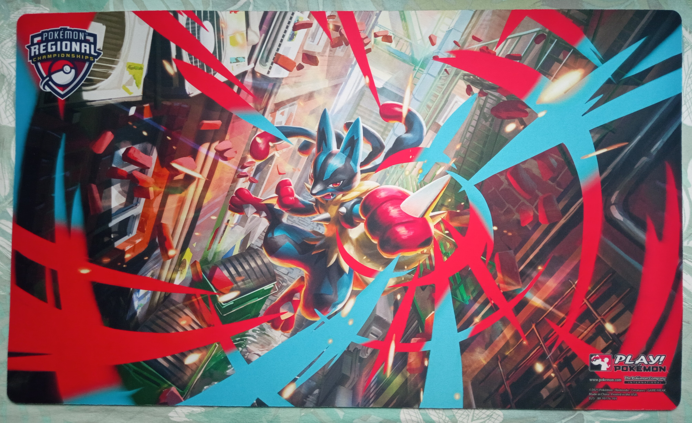
Le playmat offert à ceux détenant un pass compétiteur
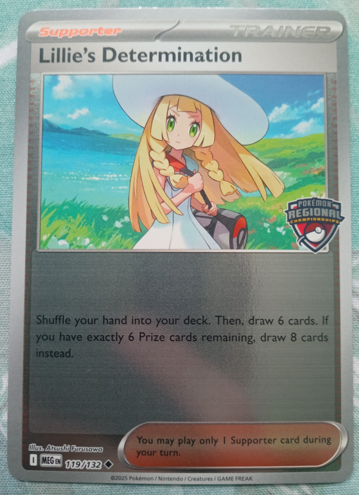
La carte offerte à ceux détennant un pass compétiteur
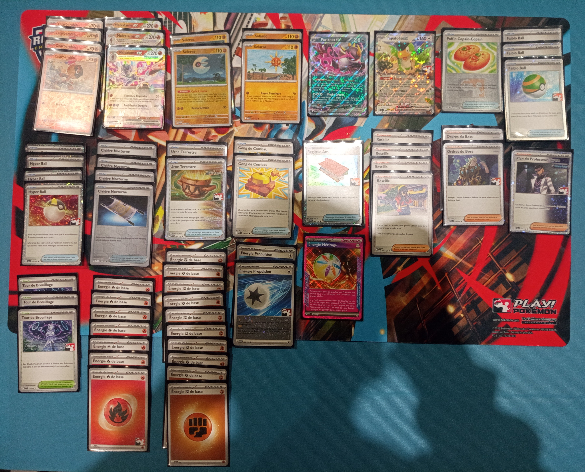
Mon deck Malvalame ex
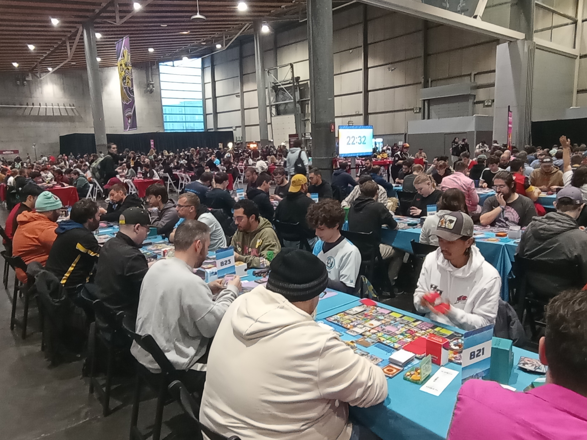
Tables bleues -> JCC
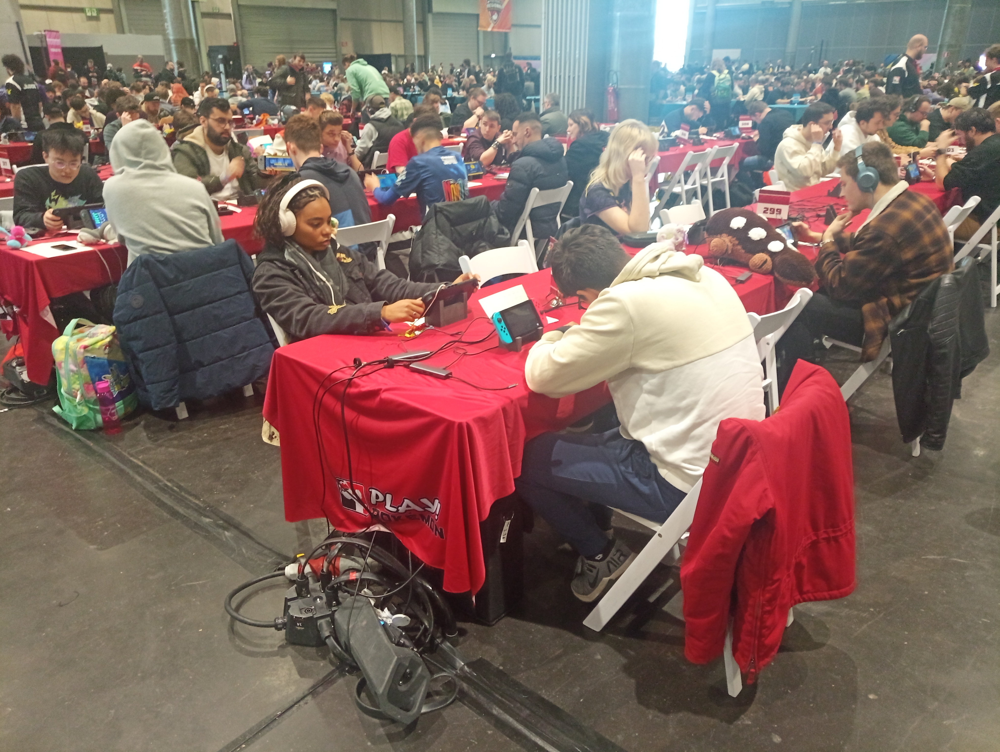
Tables rouges -> JV
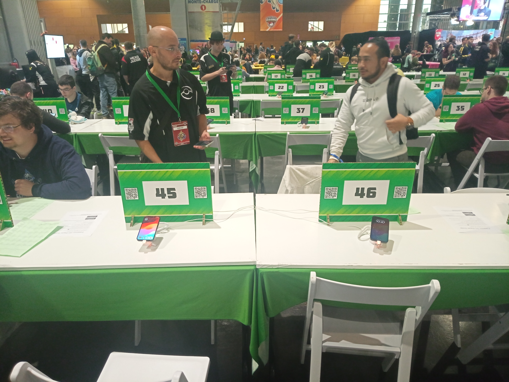
Tables vertes -> Pokémon GO
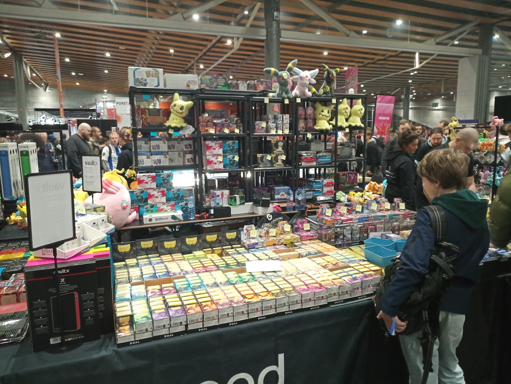
Un stand

Un deuxième stand

Un coin de la Fan zone
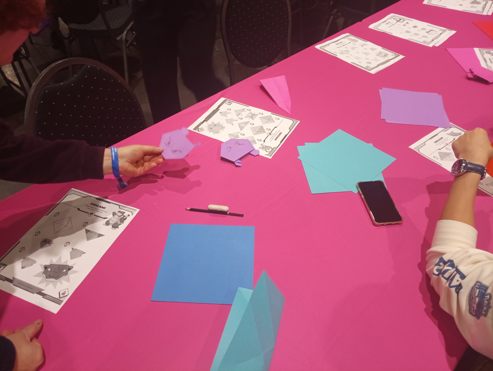
Atelier origamis
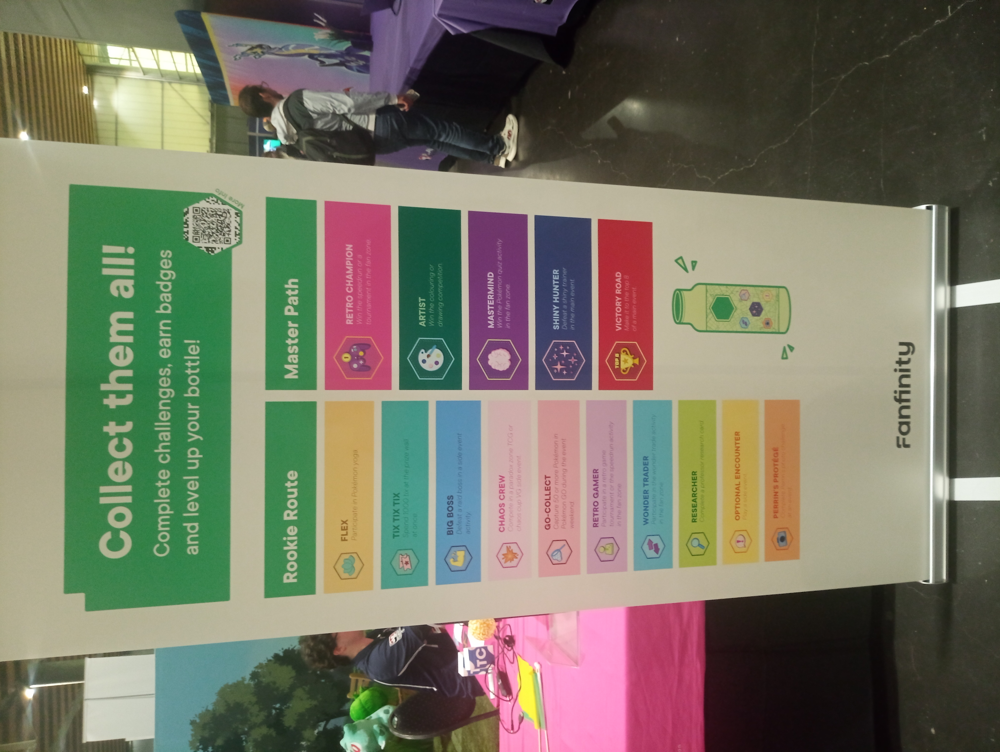
Défis à réaliser pour obtenir des stickers pour votre gourde
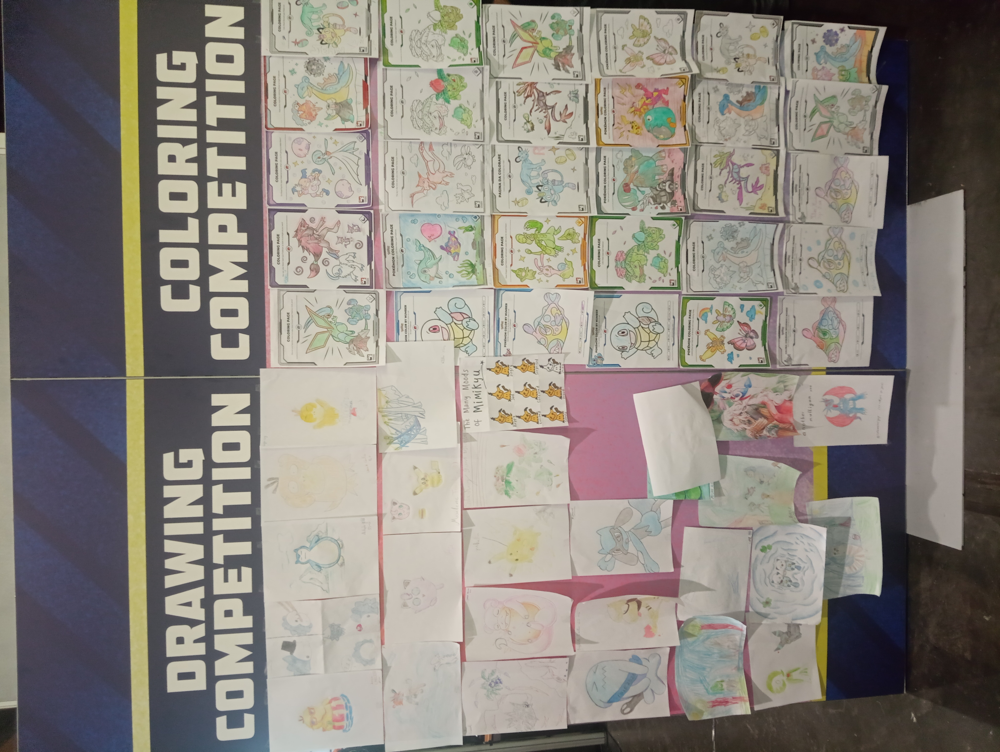
Concours de dessins et coloriages
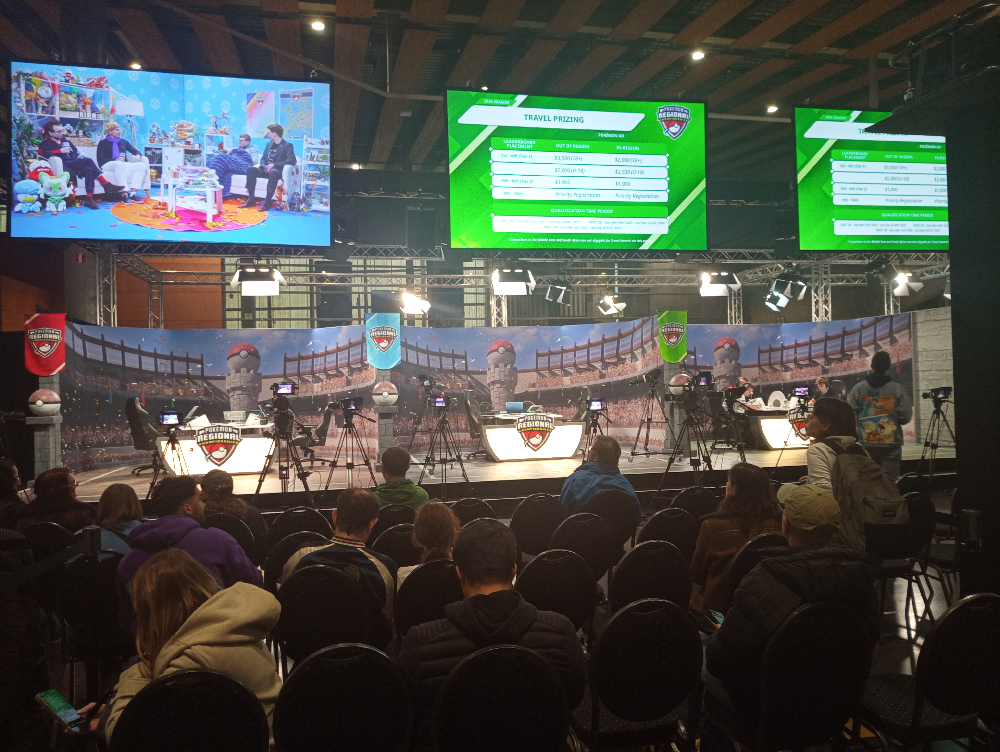
Le stream
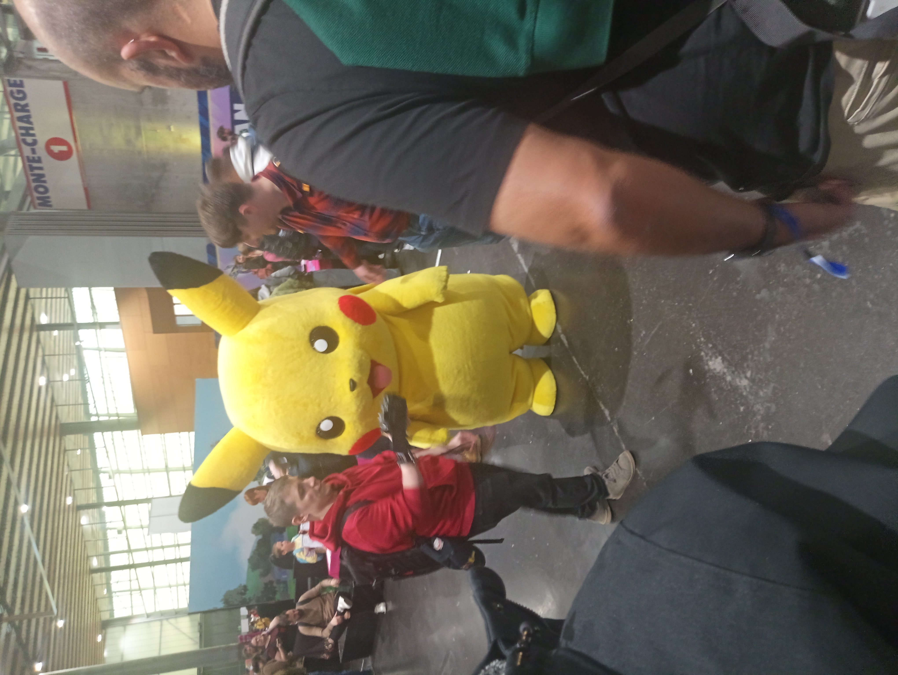
La mascotte de l'évènement

RTL présent sur place

Article du journal "La Voix du Nord" *
* Cette image ne provient pas de moi mais de Discord.